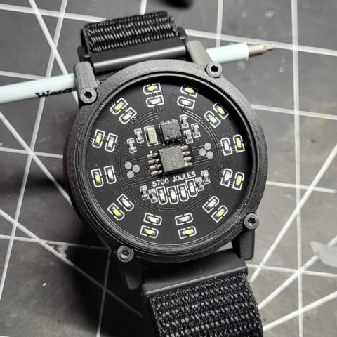
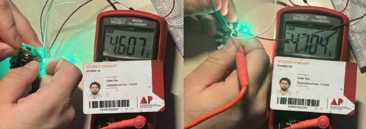
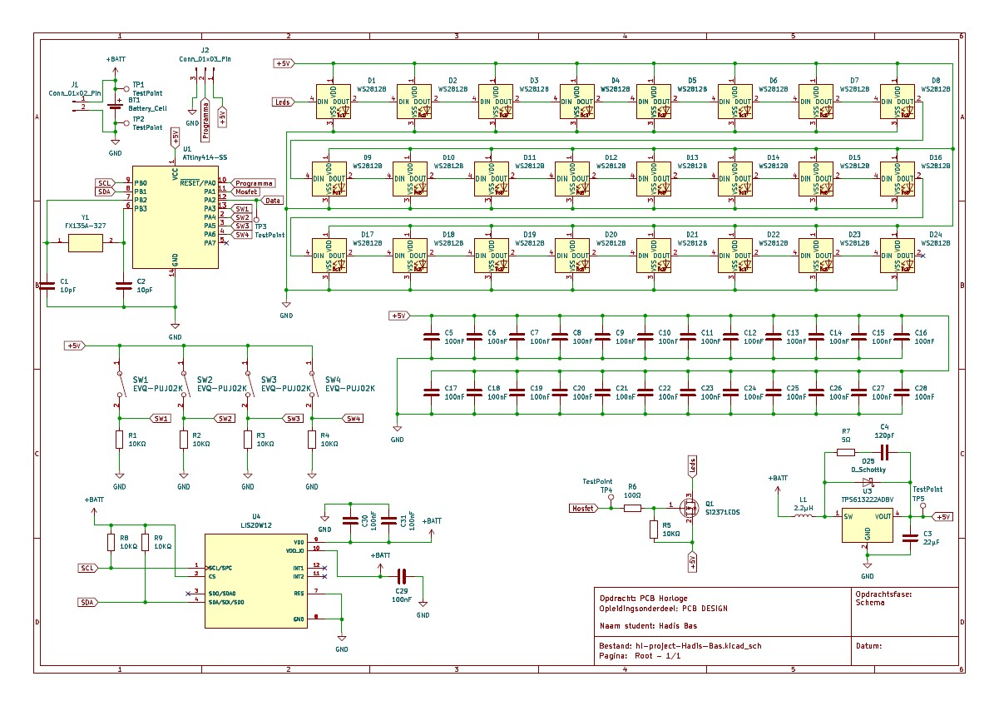
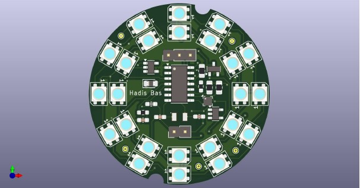
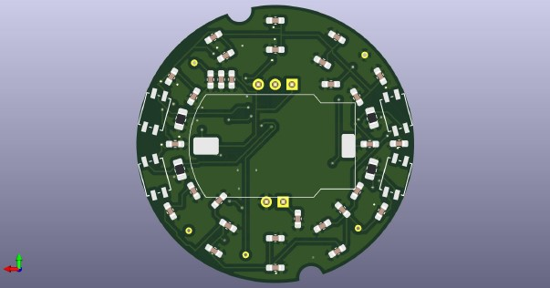

PCB-Horloge
Voor het vak Embedded System Design ontwikkelde ik een
programmeerbaar PCB-horloge waarbij zowel hardware als software
centraal stonden. Tijdens dit project werkte ik aan het ontwerpen,
solderen, testen en programmeren van een embedded systeem met
verschillende elektronische componenten zoals LEDs, drukknoppen,
een level-shifter, een MOSFET en een ATtiny814 microcontroller.
Er zijn verschillende vereisten om aan deze project te starten.
Namelijk: UDPI Connectoren zoals een VCC UDPI en GND, Test point
zoals Date LED's en Pin VBAT zodat we componenten van de
PCB-Horloge kunnen testen zonder alles in elkaar te steken, een
batterij Bypass pads, een High side MOSFET switch bij de LEDs,
doordacht componenten selectie en een groundplane.

Eerste versie
Het oorspronkelijke doel van het project was het ontwikkelen van
een functioneel horloge met LED-weergave voor uren en minuten.
Tijdens het project liep ik echter tegen verschillende
technische uitdagingen aan, waaronder problemen met de
batterijspanning en het ontbreken van een accelerometer voor
tijdsdetectie. Hierdoor besloot ik het concept creatief aan te
passen en het systeem verder uit te werken als een interactieve
stopwatch met LED-animaties.
De binnenste LED-ring telt seconden, terwijl de buitenste ring
volledige rotaties bijhoudt. Daarnaast implementeerde ik
verschillende functies via drukknoppen, zoals:
- Starten en pauzeren van de stopwatch
- Resetten van de timer
- Aan- en uitschakelen van de LEDs via een MOSFET
- Een extra LED-lichtshow
Tijdens het project maakte ik intensief gebruik van meetapparatuur zoals multimeters en oscilloscopen om fouten op te sporen en hardwareproblemen te analyseren. Ook leerde ik nauwkeuriger werken tijdens PCB-design, componentselectie en het dubbel controleren van schema’s voordat een PCB geproduceerd wordt.

| Functionaliteit | Resultaat | Indien van toepassing: Fout gevonden? |
|---|---|---|
| Werkspanning LEDs | Alle leds werken perfect. | Ik heb ervoor gezorgd dat ik op dit moment geen boost-converter nodig had bij het aanzetten van de leds. Ik heb namelijk de 5V van de arduino gebruikt om mijn leds spanning te geven. |
| Werkinspanning alle andere componenten | Alles klopt. | / |
| Horloge werkt op batterij | Het werkt op sommige omstandigheden. | De batterij wilt geen constante 3.3V geven. Dit zorgt ervoor dat we deze niet perfect kunnen omzetten naar 5V. |
| Uploaden via UDPI | Ik kan mijn code uploaden zonder problemen. | Geen problemen |
| Aansturen van LEDs die uren weergeven | We hebben geen lis2DE12 Accelerometer gebruikt. | Ik heb code geschreven waarbij de binnencirkel van het horloge de seconde telt tot 12, dus een volledige rotatie, en dan de aantal rotaties telt door een ledje te branden aan de buitencirkel. |
| Aansturen van LEDs die minuten weergeven | We hebben geen lis2DE12 Accelerometer gebruikt. | Ik heb code geschreven waarbij de binnencirkel van het horloge de seconde telt tot 12, dus een volledige rotatie, en dan de aantal rotaties telt door een ledje te branden aan de buitencirkel. |
| Aan / uit schakelen van de LEDs is mogelijk m.b.v. de mosfet | k kan de leds aan en uit zetten. | / |
| Werking drukknoppen | Werkt perfect | / |
| Extern kristal is bruikbaar | Niet gesoldeerd | / |
De design moesten we maken via Kicad dit is een een gratis,
open-source softwarepakket voor electronic design automation
(EDA), waarmee gebruikers elektronische schema's en printplaten
(PCB's) kunnen ontwerpen. Deze design konden we ook realiseren
door deze te sturen en te laten maken.
Alvoorens we
iets doorsturen om het te doen printen moesten we eerst een
schematische voorstelling maken, om aan te tonen dat alles perfect
verbonden is met elkaar en te tonen dat alles zeker werkt.



Video
In de video ziet u verschillende dingen. Eerste is het aan en uit zetten van de Leds met behulp van knop 4, linksboven. Vervolgens ziet u de stopwatch zien werken met de start en stop knop 1, rechtsboven. Je ziet dat als het is gepauzeerd dan kan ik op knop 3, linksonder, drukken om een licht show te geven. Deze blijft draaien tot ik terug op de knop druk. Knop 2, rechtsonder, zorgt ervoor dat de stopwatch reset.